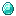
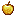
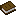

MINEGUIA
O jeito mais fácil de entender Minecraft. Guias rápidos, com as imagens dos itens do jogo e zero enrolação.

Escolha sua abaCada aba é um guia completo sobre um assunto do jogo. Clique e aprenda no seu ritmo — sem precisar decorar nada.
A Superfície
Todos os biomas do mundo normal, os animais e monstros de cada um e todas as estruturas — da vila à Cidade Ancestral —, com onde encontrar e o que vem nos baús.
 Abrir guia
Abrir guia
Guia até o Topo
Do cobre à netherite: quanto minério você precisa para a armadura completa e para cada ferramenta — com calculadora para montar só o que você quer e todas as trocas com os aldeões.
 Abrir guia
Abrir guia

Os Encantamentos
O melhor encantamento para cada ferramenta, arma e armadura, como usar a mesa e a bigorna e todos os encantamentos do jogo, nível por nível.
 Abrir guia
Abrir guia


Rumo ao Nether
Os 5 biomas do Nether e os mobs de cada um, a fortaleza, o bastião, o fóssil e o portal em ruínas — com tudo o que vem nos baús.
 Abrir guia
Abrir guia
As Poções
Escolha uma poção e veja como fazer, passo a passo: o suporte de poções, os ingredientes, as versões mais fortes, as arremessáveis e as flechas com efeito.
 Abrir guia
Abrir guia

The End
O jeito mais fácil de derrotar o Dragão de Ender, o que levar e tudo o que dá para conseguir no End — Élitros, Cabeça do Dragão, Ovo do Dragão — e onde encontrar.
 Abrir guia
Abrir guia
Você sabia?
Um dia inteiro no Minecraft dura 20 minutos na vida real.